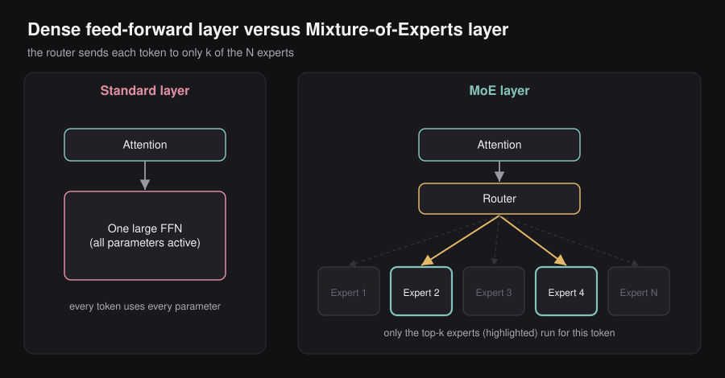
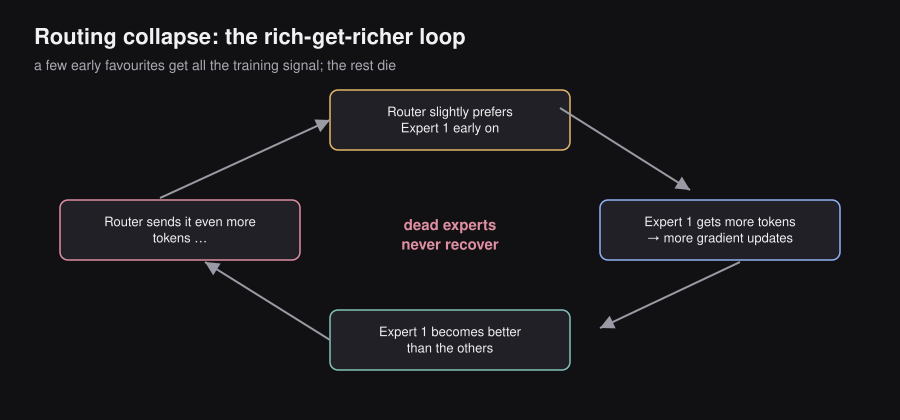
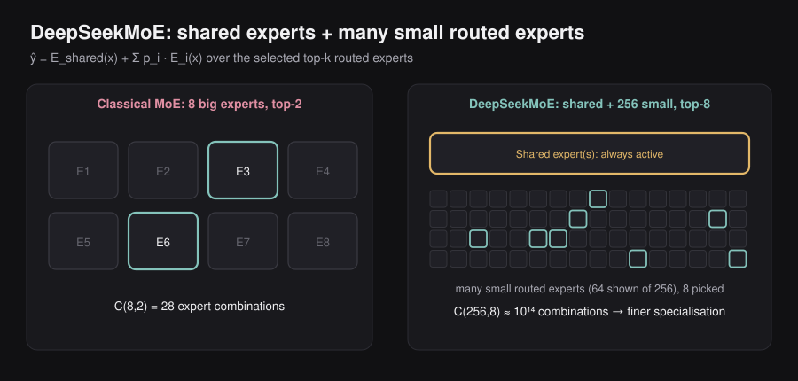
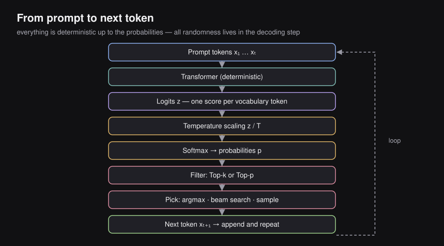
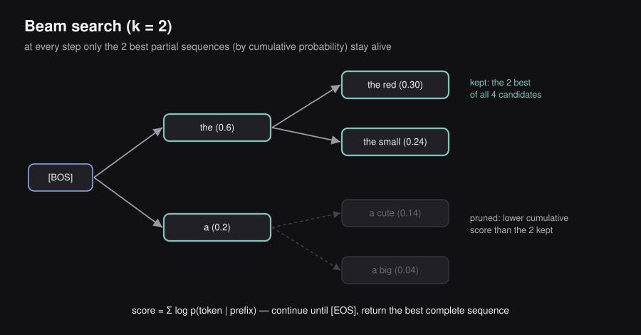
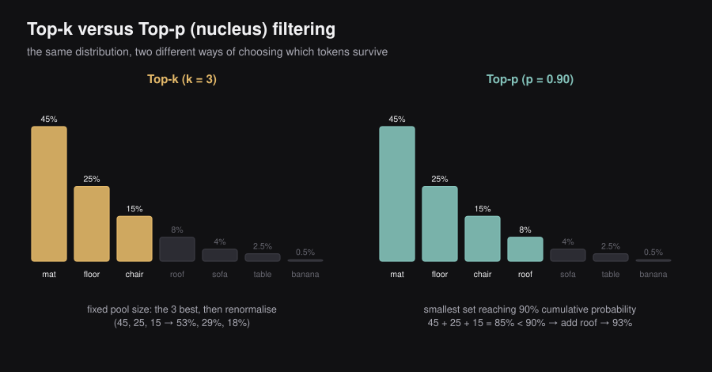
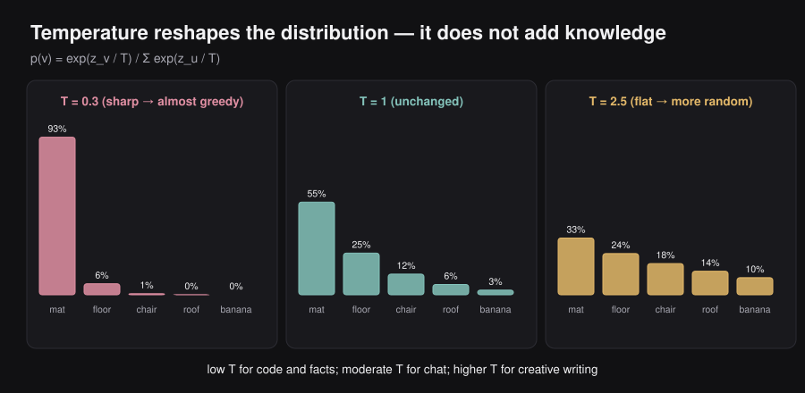
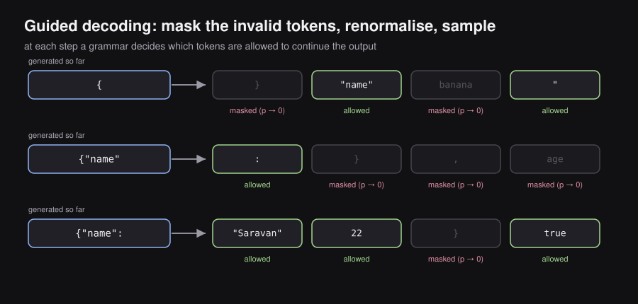
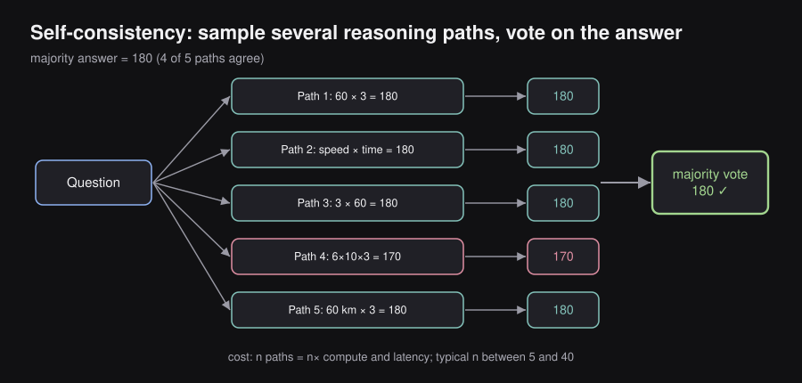

ENGINEERING BLOG / CHAPTER 05 OF 10
Large Language Models: Experts, Decoding and Prompting
5.1 — What Is a Large Language Model?
Definition
A Large Language Model (LLM) is a statistical model that assigns probabilities to sequences of tokens. Given a sequence of words (or subword tokens), it answers the question: “What token is most likely to come next?”
More precisely, an LLM learns a conditional probability distribution:
where are the tokens seen so far, and is the next token to predict.
What Makes It “Large”?
Three things set LLMs apart from earlier, smaller language models:
| Property | Scale |
|---|---|
| Model size | Billions of parameters or more |
| Training data | Hundreds of billions of tokens or more |
| Compute | Thousands of GPUs running for weeks or months |
Architectural Choice: Decoder-Only
Modern LLMs (GPT, LLaMA, Gemma, DeepSeek, Mistral, Qwen, etc.) use a decoder-only Transformer. Unlike the original Transformer that had both an encoder and decoder, decoder-only models have only the decoder stack.
This means:
- Every forward pass attends only to tokens to the left (causal masking), never to future tokens.
- The model generates text one token at a time, appending each new token to the context before generating the next one. This is called autoregressive generation.
Input: "A teddy bear is"
↓
Decoder-only Transformer
↓
Output: distribution over next token → sample → "cute"
New input: "A teddy bear is cute"
↓
Decoder-only Transformer
↓
Output: distribution over next token → sample → "."Main Takeaway: An LLM is a probability distribution over tokens. It doesn’t “think” — it predicts the statistically most plausible continuation of a sequence, token by token.
5.2 — The Problem with Dense Transformers
Every Transformer layer has two sub-components:
- Multi-Head Attention — lets each token look at other tokens
- Feed-Forward Network (FFN) — processes each token independently through a two-layer MLP
In a standard (“dense”) Transformer, every single parameter fires on every single token. If a model has 70 billion parameters, every token — whether it’s a mathematical symbol, a French word, or a code keyword — passes through all 70B parameters.
This is inefficient. A token like the word integral probably doesn’t need the model’s French grammar knowledge. Yet every parameter is activated regardless.
The insight behind MoE is simple:
Not all weights are useful for every token. We should only activate the ones that are relevant.
5.3 — MoE Architecture: Experts and Routers
MoE replaces the single FFN in each Transformer layer with:

- smaller FFNs — called experts, each with its own independent weight matrix
- A router (gating network) — a lightweight network that looks at each token and decides which experts to send it to
For each token, only out of experts are activated. The rest remain dormant — they contribute nothing to that token’s computation and consume no FLOP.
Standard Transformer Layer MoE Transformer Layer
────────────────────────── ──────────────────────────────────
Attention Attention
↓ ↓
One large FFN Router (lightweight)
(all parameters active) ↓
Expert₁ Expert₂ Expert₃ … Expertₙ
↑ ↑
(only top-k experts run)Why replace the FFN specifically?
FFNs hold the vast majority of a Transformer’s parameters. Attention heads are relatively small. Replacing the FFN with a sparse expert layer gives the maximum possible compute savings.
What exactly is an expert?
An expert is just a smaller FFN. Nobody hand-labels them as “the math expert” or “the grammar expert” before training. Specialization emerges on its own during training through a feedback process:
- Code tokens preferentially route to certain experts.
- Those experts see more code → they get more gradient signal about code → they get better at code.
- The router learns to send code tokens to them because they perform better.
- The loop reinforces itself until experts develop genuine specializations.
Token-level routing — an important subtlety:
The router makes independent decisions for each token in each layer. The word “Python” might be sent to Expert 7 in Layer 2 and Expert 11 in Layer 5. Routing is not per-sentence or per-request — it’s per-token, per-layer.
Active parameters vs. total parameters:
This distinction is the key to understanding MoE’s value proposition:
- = number of experts selected per token
- = parameters per expert
- = total number of experts
When , the model can be enormous in total parameter count while remaining cheap per token in compute.
Real-world example: DeepSeek-V3 has parameters but only are used per token — an 18× ratio. The model is 18× larger than a comparably-quality dense model would need to be, but inference costs nearly the same as a 37B model.
5.4 — Router Mathematics and Geometric Intuition
The router is a simple linear layer followed by a softmax. Here’s how it works step by step.
Step 1: Compute a score for each expert.
Given the token’s hidden-state vector , the router computes a raw score for each expert using a learned gating vector :
What this means:
- — the hidden representation of the current token (a vector of size )
- — the learned “direction” associated with expert (also a vector of size )
- — the dot product, measuring how aligned the token is with expert
Geometric intuition: Think of the token embedding and each expert direction as arrows in a high-dimensional space. The dot product measures how much they point in the same direction. If a token is about code and Expert 4 has specialized in code, their directions will point similarly, and will be large. If Expert 4 were a history specialist, the directions would be nearly perpendicular, and would be small.
Step 2: Convert scores to probabilities.
Raw scores are converted to proper probabilities using softmax:
What this means:
- — routing probability for expert ; describes how much the router “prefers” expert for this token
- The denominator normalizes across all experts so probabilities sum to 1
- Exponentiation amplifies differences: an expert with slightly higher score gets disproportionately higher probability
Step 3: Compute the output.
Dense MoE (all experts contribute, weighted by their probability):
- — the output of expert applied to the token
- — the routing probability (weight) for expert
- — the final output: a weighted average of all expert outputs
This is rarely used in practice because it provides no compute savings.
Sparse MoE (only the top- experts contribute):
- — the set of indices of the experts with the highest routing probabilities
- Experts not in are never evaluated; their contribution is exactly zero without any computation
This is the modern standard. Experts outside the top- are simply skipped.
Special case — Top-1 / Switch Transformer:
- — the single expert with the highest score
- Only one expert runs; this halves the compute cost compared to Top-2
- The tradeoff: there’s no backup expert. If the router makes a bad decision for a token, there’s no correction mechanism.
5.5 — Dense MoE vs Sparse MoE
| Property | Dense MoE | Sparse MoE (Top-k) |
|---|---|---|
| Experts executed per token | All | Only |
| Compute per token | Same as dense FFN (no savings) | Proportional to fraction |
| Output formula | Weighted average of all experts | Weighted average of selected experts |
| Specialization incentive | Low (every expert sees all tokens) | High (each expert sees specific tokens) |
| Modern usage | Rarely used | Industry standard |
| Examples | — | Mixtral 8×7B, DeepSeek-V3 |
Concrete examples:
- Mixtral 8×7B: experts, Top- → 2 of 8 experts activate per token
- DeepSeek-V3: fine-grained experts, Top- → 8 of 256 experts activate per token
5.6 — Training Pathologies: What Goes Wrong
MoE sounds perfect in theory. In practice, training it naively produces a fundamental failure mode called routing collapse.
The Routing Collapse Problem
At the very start of training, all experts are identically random — they’re equally bad at everything. Token routing at this stage is essentially arbitrary.

By pure chance, one expert might receive slightly more tokens in the first few batches. What happens next is a self-reinforcing loop:
Reading it out: Expert gets more tokens → receives more gradient updates → becomes better → router assigns it higher probability → receives even more tokens → …
This feedback loop accelerates. Within a few thousand training steps, one expert dominates the routing, absorbing 70–90% of all tokens. The other experts receive almost no tokens, almost no gradient signal, and remain essentially random — they are called dead experts.
The result: you paid for experts but effectively trained one. The MoE is no better than a dense model, with extra routing overhead making it worse.
Why Dead Experts Are Permanent
A dead expert receives almost no tokens, so:
With zero gradients, no parameter updates occur. The expert stays random indefinitely. Without an external intervention, it will never recover.
Key point: Routing collapse is the central training challenge of MoE. Every major MoE paper (Switch Transformer, Mixtral, DeepSeekMoE) proposes solutions to this problem.
Expert Capacity and Token Overflow
A secondary problem: even with good routing, GPUs have fixed memory. Each expert can only hold and process a limited number of tokens per batch. Define the capacity as:
- — total tokens in the batch
- — number of experts
- — capacity factor, a constant greater than 1 (e.g., 1.25) that provides headroom above the average load
When an expert receives more than tokens, the excess tokens are overflow tokens. Classical systems simply drop them: instead of , they pass (just the residual, unchanged). Information is lost.
Modern systems (vLLM, Mixtral) prefer dropless approaches that process all tokens regardless, accepting uneven expert loads as a lesser evil.
5.7 — Remedies: How We Fix Routing Collapse
Remedy 1: Load Balancing Loss (Switch Transformer, Fedus et al. 2021)
The Switch Transformer introduced an auxiliary loss term that penalizes expert imbalance. First, two statistics are defined for each training batch:
- = fraction of tokens routed to expert (discrete, measured from actual routing decisions)
- = average routing probability assigned to expert by the router (continuous, differentiable)
The auxiliary loss is:
What each symbol means:
- — a small scalar hyperparameter (typically around ) that controls how strongly balancing is enforced vs. language modeling
- — number of experts (the normalization makes the target value of the loss independent of )
- — how many tokens actually went to expert this batch
- — how strongly the router prefers expert
Intuition: The product is large when expert both receives many tokens and has high router probability — i.e., when it is dominating. Minimizing the sum of these products pressures the router to distribute tokens more evenly.
Why this works mechanically: Since is differentiable (it comes from the softmax), the gradient flows into the router’s parameters. Overloaded experts get their reduced; underloaded ones get their increased. Over thousands of steps, this pushes routing toward uniform distribution.
Total training loss:
The fundamental tension: says “send this token to the best possible expert.” says “but also spread tokens evenly.” These goals conflict — the model is sometimes forced to route tokens to a suboptimal expert just for balance. DeepSeek later solved this tension (Section 5.8).
Remedy 2: Noisy Top-K Gating (Shazeer et al. 2017)
The original MoE paper adds Gaussian noise to router scores before the top-k selection:
- — noisy score for expert
- — random noise sampled from a zero-mean Gaussian with variance
- The top-k selection then uses instead of
Why this helps: Noise forces exploration. Even if Expert 3 has the highest raw score by a small margin, random noise might occasionally let Expert 7 win the top-k lottery. Expert 7 then receives gradient signal, learns something useful, and becomes competitive — breaking the early-stage collapse before it can entrench.
Think of it as randomized exploration, similar to the -greedy strategy in reinforcement learning.
Remedy 3: Router Z-Loss (ST-MoE)
A separate failure mode: router logits can grow very large in magnitude during training. When this happens, the softmax function saturates — one expert gets nearly all the probability mass and the rest get almost zero. For example, if logits are , the softmax produces approximately .
The z-loss penalizes large logit magnitudes:
- — the number of tokens in the batch
- — the raw logit (pre-softmax score) that expert assigns to token
- — the log-sum-exp of all logits (the log of the denominator in softmax); this grows when logits are large
- The squared term heavily penalizes large values
Intuition: When logits are small, is bounded. When one logit blows up to 100, the log-sum-exp is dominated by that term and becomes large, incurring heavy penalty. This gently constrains the logits to remain in a reasonable range without directly interfering with routing decisions.
5.8 — DeepSeekMoE: The Modern Evolution
DeepSeek identified three fundamental problems with classical MoE and proposed architectural solutions for each.
Background: Why Classical MoE Wastes Expert Capacity
Imagine training an MoE on a large English text corpus. Every single token — regardless of topic — needs basic English grammar, punctuation logic, and common word relationships. This means all experts must learn these common patterns just to function.
After training, you might find:
- Expert 1 knows grammar + some math
- Expert 2 knows grammar + some code
- Expert 3 knows grammar + some history
The grammar knowledge is redundantly duplicated across all experts. Those parameters are wasted — they could have encoded more specialized knowledge instead.
Innovation 1: Shared Experts
DeepSeek separates expert knowledge into two tiers:
Shared experts — always active for every token, no routing needed. These handle universal knowledge.
Routed experts — only a subset activates per token, selected by the router. These handle specialized knowledge.
The output formula becomes:
- — output from the shared expert (always computed)
- — weighted sum of selected routed experts (only of computed)
Analogy: Think of a university degree. Every student takes the core curriculum (shared expert) — writing, math, critical thinking. Then each student takes electives (routed experts) — neuroscience, software engineering, law. The core curriculum doesn’t need to be duplicated in every elective. Shared experts work the same way.
Innovation 2: Fine-Grained Expert Segmentation
Classical MoE uses a small number of large experts (e.g., 8 experts, Top-2). The granularity of routing combinations is limited:

DeepSeek instead uses many small experts (e.g., 256 experts, Top-8):
The parameter budget is the same — each small expert is times smaller if there are times as many of them. But the routing combinations are astronomically larger, allowing the model to form exquisitely specific “expert ensembles” tailored to each token’s unique requirements.
Example: A token like eigenvalue might need a blend of linear algebra, numerical analysis, and physics notation. With 256 micro-experts, the router can select precisely the three sub-experts covering each of those domains. With 8 large experts, the best you can do is pick the two coarsest relevant categories.
Math: If we segment experts into smaller experts and increase selection from to , the total compute per token stays the same (more experts, each smaller, same number selected). But specialization improves dramatically.
Innovation 3: Auxiliary-Loss-Free Balancing (DeepSeek-V3)
This is arguably DeepSeek’s most significant contribution to MoE training.
The core problem: contaminates the language model gradient. Router parameters receive two competing gradient signals simultaneously — one from (optimize language modeling) and one from (spread tokens evenly). This causes the router to sometimes choose a suboptimal expert just to satisfy the balancing constraint, directly harming output quality.
DeepSeek’s solution: Separate the balancing mechanism from the gradient computation entirely, by introducing an expert bias for each expert:
- — the original routing score from the router
- — a learned bias term for expert ; adjusted after each batch based on expert load
- — the adjusted score used to decide which experts to select
Bias update rule (no gradients involved):
where is a small step size.
The critical detail: Once the top- experts are selected (using ), the output weighting uses the original scores (not ):
- — the top- experts selected using the biased scores
- — the weights computed from the original unbiased scores
This means: the bias term nudges which experts get selected (promoting underused ones), but once selected, experts are weighted by their true router confidence. The bias never enters the gradient computation. remains pure.
Why this is elegant: Load balancing is now a simple feedback control loop (like a thermostat), completely separate from deep learning optimization. The language model and the routing policy are finally decoupled.
MoE Evolution Timeline
Shazeer et al. 2017 → Original Sparse MoE: sparsely-gated top-k routing
GShard (Google) 2020 → Top-2 routing scaled to trillion parameters
Switch Transformer → Top-1 routing + load balancing auxiliary loss (2021)
Mixtral 8×7B 2024 → First widely-used open-source MoE (N=8, k=2)
DeepSeekMoE 2024 → Shared experts + fine-grained segmentation
DeepSeek-V3 2024-25 → Aux-loss-free bias balancing; 671B total / 37B active5.9 — The Full Decoding Pipeline
Once an LLM has processed a prompt, it produces a probability distribution over the next token. The decoding strategy decides which token to actually pick. This section covers every major decoding strategy, from simplest to most sophisticated.

Here is the complete journey from a prompt to a generated token:
Prompt (tokens x₁, x₂, ..., xₜ)
↓
Transformer (deterministic computation)
↓
Logits z ∈ ℝ^|V| (one raw score per vocabulary token)
↓
Temperature scaling (optional: z → z/T)
↓
Softmax
↓
Probabilities p ∈ [0,1]^|V| (sum to 1)
↓
Filtering (Top-k or Top-p) (optional)
↓
Decoding Strategy (argmax, beam search, or sample)
↓
Chosen token xₜ₊₁
↓
Append to context → repeatThe most important insight in this section:
The Transformer itself is completely deterministic. The same input always produces the exact same logits and the exact same probability distribution. All randomness comes from the decoding strategy, not from the neural network.
When GPT or Claude gives you a different response to the same question, it’s not because the model itself changed — it’s because the sampling step draws from a probability distribution, introducing stochasticity.
5.10 — Greedy Decoding
What it is: The simplest possible decoding strategy. At every step, pick the single token with the highest probability:
- — a candidate vocabulary token
- — the probability of token given all previous tokens
Example:
"The cat sat on the ___"
mat 45% ← argmax picks this
floor 25%
chair 15%
roof 8%Greedy always picks “mat” here. Every time. Forever.
Why it exists: It is fast, reproducible, and requires zero randomness. Useful when you need deterministic outputs.
Why it fails: Locally optimal choices do not guarantee globally optimal sequences. The best next word does not always lead to the best sentence. Greedy decoding leads to repetitive, safe, generic outputs — it keeps returning to the same token patterns because it never explores alternatives.
Key Insight: Greedy decoding is equivalent to temperature — it concentrates all probability on the single most likely token.
5.11 — Beam Search
What it is: Instead of committing to one token at each step (greedy), beam search maintains candidate sequences — called beams — simultaneously. At each step, every beam is expanded into its most probable continuations, and the best overall sequences (by cumulative score) are kept.

Scoring: Each sequence is scored by the sum of log-probabilities of its tokens:
- — log probability of token given all prior tokens
- Summing log-probabilities is equivalent to multiplying probabilities (log turns multiplication into addition, which prevents numerical underflow)
Why log-probabilities? Since all probabilities are in , multiplying many of them together gives astronomically small numbers. Log transforms them to negative numbers in a manageable range. Higher (less negative) log-probability = better sequence.
How it works (example with ):
Step 0: Start from [BOS]
Step 1: Expand → {a (p=0.2), the (p=0.6)}
Keep top 2 beams: "a" and "the"
Step 2: Expand each beam
"a" → {cute (p=0.7), big (p=0.2)}
"the" → {red (p=0.5), small (p=0.4)}
Keep top 2 by cumulative score
Step 3: Continue until [EOS] token
Return the highest-scoring complete sequenceWhy it’s better than greedy: Greedy might pick “a” as the first word (p=0.2) even though “the” (p=0.6) leads to a much better overall sentence. Beam search explores “the” as well, and can discover that “the cute bear” has higher total probability than “a big bear.”
Where it’s used: Machine translation, speech recognition, document summarization — tasks where you want the single most probable output.
Why chatbots don’t use it: Beam search optimizes for the most statistically probable response, which tends to be safe, bland, and repetitive. It has no diversity mechanism. For open-ended chat, the most probable response is usually the most boring one. Modern assistants use sampling-based approaches instead.
5.12 — Pure Sampling, Top-k, and Top-p
Pure Sampling
Instead of picking the most probable token, draw randomly according to the full probability distribution . Higher-probability tokens are chosen more often, but lower-probability tokens still get occasional chances.
This creates variety — the model can express different ideas and phrasings rather than always defaulting to the safest choice. But it also risks selecting nearly-impossible tokens (probability 0.00001%) that produce incoherent text.
Top-k Sampling
What it is: Keep only the most probable tokens. Discard the rest. Renormalize the remaining probabilities to sum to 1, then sample from those tokens:
- — indicator function: 1 if token is in the top-k, 0 otherwise
- The denominator renormalizes the surviving tokens
Example with :
Before: mat=45%, floor=25%, chair=15%, roof=8%, banana=0.1%
After: mat=52%, floor=29%, chair=17% (roof and banana discarded)Weakness: is fixed regardless of context. When the model is very confident (e.g., one token has 95% probability), forcing Top-50 means sampling from 49 nearly-impossible tokens. When the model is very uncertain, Top-10 might cut off many reasonable continuations.
Top-p (Nucleus) Sampling
What it is: Instead of a fixed count, include the smallest set of tokens whose cumulative probability reaches a threshold :

- — the “nucleus”: the smallest set of top tokens covering fraction of probability mass
- Typical
Example with :
Token probabilities (sorted):
mat 60% → cumulative: 60%
floor 20% → cumulative: 80%
chair 10% → cumulative: 90% ← stop here, 90% reached
Nucleus = {mat, floor, chair}
Sample from these three.Why Top-p is adaptive:
- When the model is confident (one token has 80% probability), the nucleus is small — just 1 or 2 tokens. We don’t waste samples on implausible words.
- When the model is uncertain (probabilities are spread evenly), the nucleus is large — 20, 30, or more tokens. The model has freedom to be creative.
Top-k vs Top-p comparison:
| Top-k | Top-p (Nucleus) | |
|---|---|---|
| Pool size | Fixed: always tokens | Adaptive: depends on probability distribution |
| When model is confident | Still samples from tokens (some near-zero) | Shrinks pool to a few tokens |
| When model is uncertain | Same tokens | Expands pool to cover more options |
| Practical default | ||
| Industry preference | Less common | Widely used in production |
5.13 — Temperature Scaling
What it is: A scalar parameter applied to the raw logits before the softmax. It reshapes how “peaked” or “flat” the resulting probability distribution is:

- — the raw logit (pre-softmax score) for token
- — temperature
- Dividing logits by before softmax changes the sharpness of the distribution
What temperature actually does:
| Temperature | Effect on distribution | Effect on output |
|---|---|---|
| Collapses to argmax (winner takes all) | Deterministic, same as greedy | |
| Standard softmax, no change | Default behavior | |
| Flattens distribution toward uniform | More random, more creative | |
| Perfectly uniform (all tokens equally likely) | Incoherent/random |
Important clarification: Temperature does not change what the model knows. It doesn’t add intelligence or creativity. It only reshapes the confidence of the distribution. A model at doesn’t “know” more — it just hedges its bets more broadly.
The math intuition: Dividing all logits by a large makes them all small, and when small values go through softmax, the differences between them shrink — the distribution flattens. Dividing by a tiny makes differences between logits huge — the highest logit dominates everything.
Practical guide by task:
| Task | Recommended | Reason |
|---|---|---|
| Code generation | 0.0 – 0.2 | Code has correct/incorrect answers. Need precision, not creativity. |
| Factual Q&A / search | 0.1 – 0.3 | Facts are fixed. Low randomness = fewer hallucinations. |
| Conversational chat | 0.5 – 0.8 | Balanced: sounds natural without being nonsensical. |
| Creative writing / stories | 1.0 – 1.2 | Creativity is valued over predictability. |
Full production pipeline (in order):
Raw logits z
↓ divide by T
Scaled logits z/T
↓ softmax
Probabilities p_T
↓ Top-k or Top-p filter
Filtered + renormalized probabilities
↓ sample
Next token5.14 — Guided Decoding
The problem it solves: Standard sampling can produce structurally invalid outputs even when the prompt explicitly requests a format. Ask for JSON and the model might produce:

{name: "Saravan", age: 22,}This is invalid JSON — missing quotes around keys, trailing comma. Even though the prompt said “return JSON,” the model just predicts likely token sequences, with no awareness of grammatical structure.
What guided decoding is: At every generation step, a grammar (JSON schema, regex, context-free grammar, finite state machine) determines exactly which tokens are valid continuations of the partially-generated output. All invalid tokens are masked to zero probability before sampling:
- — the set of tokens that are valid at the current position according to the grammar
- — masks invalid tokens to zero
- The denominator renormalizes valid tokens to sum to 1
Example for JSON generation:
Generated so far: {
Next position allows: only "}" or a string (JSON key)
Generated so far: {"name"
Next position allows: only ":"
Generated so far: {"name":
Next position allows: only a JSON value (string, number, bool, null, array, object)At each step, invalid tokens are silently zeroed out. The model still generates — it just cannot produce structurally broken output.
Where this is used today:
- OpenAI Structured Outputs
- OpenAI JSON mode
- Function calling / tool calling
- Grammar-constrained generation (Outlines library)
- LLM API schema validation
5.15 — Context Length and Context Rot
Prompting strategies are techniques for getting better outputs from a pre-trained, frozen LLM without modifying its weights. The model stays the same; you change how you talk to it.
What Is Context Length?
Every time an LLM processes a request, it can only “see” a limited amount of text at once. This window of text is called the context window (also: context length, context size, window size).
Everything the model uses to generate its next token must fit inside this window:
┌────────────────────────────────────────────┐
│ Context Window │
│ │
│ System prompt │
│ Chat history │
│ User message │
│ Retrieved documents │
│ Model's own partial output │
│ │
└────────────────────────────────────────────┘If total tokens exceed the context limit, older content gets truncated — the model literally cannot see it.
Why context length matters:
- A model with a 4K token limit cannot summarize a 50-page document in one pass.
- A model with a 200K token limit can read an entire codebase before answering a question.
- More context = more information available = better, more informed answers (in theory).
Modern models support 8K to 1M+ token contexts. But bigger context windows come with a cost: standard self-attention scales quadratically — doubling context length quadruples attention compute.
Context Rot
The surprising finding (Hong et al., 2025): Larger context does not always lead to better performance. Performance often degrades as context grows — even when the relevant information is present inside the window. This is called context rot.
The “Needle in a Haystack” benchmark demonstrates this precisely: a single key fact (the “needle”) is hidden inside pages of filler text (the “haystack”). The question requires finding and using that fact. As grows, model accuracy drops — even when the needle is within the stated context limit.
Why this happens: Attention is supposed to find and weight relevant information. But when thousands of irrelevant tokens compete with a handful of relevant ones, the signal gets diluted. The relevant tokens’ attention scores are suppressed by the sheer volume of surrounding noise.
Practical consequence: Don’t assume “give it everything” is always the best strategy. Curating the prompt to include only relevant context often outperforms stuffing in everything available. This is one core motivation for Retrieval-Augmented Generation (RAG): instead of injecting all documents, retrieve only the 3–5 most relevant paragraphs.
5.16 — Anatomy of a Good Prompt
A well-structured prompt typically contains four components:
| Component | What It Is | Example |
|---|---|---|
| Context | Background information or role setup | “You are a senior software engineer specializing in distributed systems.” |
| Instructions | The specific task to perform | “Explain how consistent hashing works.” |
| Input | The data the model should act on | <document>...actual document text...</document> |
| Constraints | Rules about format, length, or style | “Respond in bullet points. Maximum 200 words. Use analogies.” |
Why this framework matters: When a prompt produces a bad output, the problem is almost always that one of these four components is missing, vague, or contradictory. Debugging a prompt = diagnosing which component failed.
Ordering tip: Context usually comes first (sets the frame), instructions next (sets the task), input after (provides the material), constraints last (sets the rules).
5.17 — In-Context Learning: Zero-Shot and Few-Shot
What is In-Context Learning (ICL)?
ICL is the remarkable ability of a pre-trained LLM to adapt to a completely new task using only examples embedded in the prompt — without any weight updates, gradient computation, or fine-tuning whatsoever.
Zero-Shot Learning
You ask the model to perform a task without providing any examples. The model relies entirely on patterns learned during pre-training.
Prompt: "Translate to Spanish: Hello, how are you?"
Output: "Hola, ¿cómo estás?"Zero-shot works because large pre-training datasets exposed the model to many tasks implicitly. The model generalizes.
Few-Shot Learning
You provide input-output examples before the actual question. The model infers the pattern and extends it:
Prompt:
Dog → Perro
Cat → Gato
Horse → Caballo
Bird → ?
Output: PájaroFew-shot typically outperforms zero-shot because the examples remove ambiguity about the desired task, format, and style.
What is architecturally happening?
The model is not “learning” in the traditional ML sense (no parameters change). Instead, the attention mechanism uses the example pairs as temporary working memory. When generating the answer, every attention head can attend back to the examples in the context. The model essentially pattern-matches on the examples at inference time. Pre-trained weights supply the general language capability; the in-context examples supply the task specification.
Cost tradeoffs:
| Zero-Shot | Few-Shot | |
|---|---|---|
| Context tokens used | Low | Higher (examples take space) |
| Annotation effort | None | Requires curated examples |
| Accuracy (typically) | Lower | Higher |
| Latency | Faster | Slower (longer context) |
Counterintuitive finding: Modern reasoning-specialized models (OpenAI o3, DeepSeek-R1) sometimes perform worse with few-shot examples than with zero-shot. Why? The examples can accidentally constrain the model’s reasoning — it may copy the solution method demonstrated in the examples instead of deriving the optimal approach from scratch. For such models, a clear task description plus “think step by step” often outperforms explicit examples.
5.18 — Chain of Thought (CoT)
Paper: Wei et al., 2022. Chain-of-Thought Prompting Elicits Reasoning in Large Language Models.
The Problem with Direct Answering
A standard LLM answers by computing:
the probability of an answer given a question . The model jumps directly from question to answer in one forward pass. For simple questions, this is fine. For complex questions requiring multiple steps of reasoning (multi-step math, logic puzzles, planning), it often fails — the model tries to compress an entire reasoning chain into a single next-token prediction.
Human analogy: if asked , you wouldn’t just magically know the answer. You’d compute intermediate steps: partial products, carries, additions. The intermediate steps are essential.
What CoT Does
By adding “Think step by step” to the prompt (or providing a few examples with explicit reasoning), the model generates intermediate reasoning steps before the final answer:
Standard prompting:
Chain of Thought:
- — the question
- — the reasoning chain (sequence of intermediate steps)
- — the final answer
The factored form reveals why CoT helps: is now conditioned on both and . The model’s answer is informed by its own explicitly generated reasoning. Each reasoning step becomes new context that the model attends to when generating subsequent steps.
Without CoT:
Question → [giant jump] → Answer
(often wrong)
With CoT:
Question → Step 1 → Step 2 → Step 3 → Answer
↑ ↑ ↑
(each step enriches context for the next)Mechanistic view: In standard decoding, the hidden state must encode the entire solution implicitly. With CoT, intermediate reasoning tokens are written to the context window. Each step’s computation is offloaded from the internal representation to the external token stream. Small, explicit steps are individually easier to get right than one large implicit computation.
Why CoT scales with model size:
CoT improves dramatically for models above ~100B parameters (Wei et al., 2022). Smaller models cannot generate coherent multi-step reasoning because they lack the prerequisite knowledge (arithmetic, logical deduction, planning) needed for the intermediate steps to be meaningful. CoT doesn’t install new capabilities — it unlocks existing ones.
Interpretability bonus: When a model gives a wrong answer without CoT, you have no idea where it went astray. With CoT, the reasoning chain is inspectable — you can see exactly which step introduced the error. This makes debugging and improving prompts vastly easier.
Cost: Every reasoning token is generated autoregressively. A 10-step reasoning chain before the answer means 10 extra forward passes before the model can output the final answer. Longer reasoning = higher latency and cost, proportional to the number of reasoning tokens.
5.19 — Self-Consistency
Paper: Wang et al., 2022. Self-Consistency Improves Chain of Thought Reasoning in Language Models.
The Remaining Problem with CoT
Even with CoT, a single reasoning path can go wrong. The model might follow a plausible-looking but incorrect line of reasoning and arrive at a wrong answer confidently.
The Self-Consistency Solution
Instead of generating one reasoning path and trusting its answer, generate independent reasoning paths (using temperature > 0 so they differ), extract the final answer from each, and take a majority vote:

- — the -th sampled reasoning path
- — probability that reasoning path leads to answer
- — marginalized probability of answer across all reasoning paths
- In practice: just count how many paths gave each answer; pick the most common one
Example:
Run 1: "The train travels 60 km/h for 3 hours = 180 km." → Answer: 180
Run 2: "Speed × time = 60 × 3 = 180." → Answer: 180
Run 3: "3 hours at 60 km/h: 3 × 60 = 80. Wait, that's wrong. 180." → Answer: 180
Run 4: "Distance = 6×10 × 3 = 170?" → Answer: 170
Run 5: "60 km × 3 = 180 km." → Answer: 180
Majority vote: 180 (4 out of 5 paths agree)
Final answer: 180 ✓Why it works: When multiple independent reasoning strategies — using different methods, notation, and logic — all converge on the same answer, the probability that the answer is correct is high. Disagreement across paths is a signal of uncertainty; agreement is a signal of confidence.
Reported improvement: Wang et al. show 10–20 percentage point improvements over standard CoT on arithmetic, commonsense, and symbolic reasoning benchmarks.
Cost/quality tradeoff: Running reasoning paths costs times the compute and latency. Typical values: . The improvement tapers off at larger , so there’s a sweet spot.
Connection to modern reasoning models:
OpenAI o-series, DeepSeek-R1, and Gemini Thinking internalize this idea. Instead of generating separate external paths and voting, these models are trained to internally generate, evaluate, prune, and revise reasoning paths before committing to an answer — effectively performing search over reasoning chains as part of the forward computation. Self-consistency is the conceptual ancestor of these reasoning models.